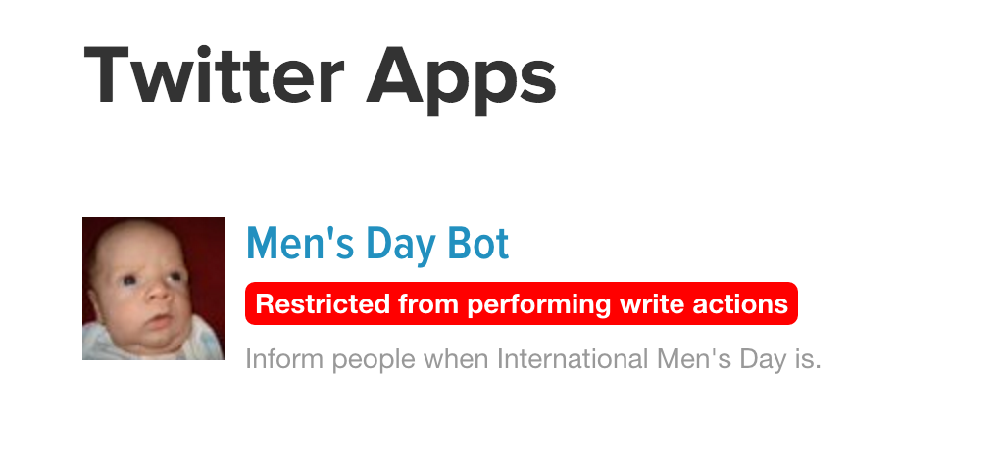

Adventures with Twitter Bots

Pro-tip for Gmail users:
username+modifier@gmail.com
redirects to username@gmail.com
which is useful for creating multiple twitter accounts
github.com/rfreebern/simple-twitter-bot
Twit.js
// tweet 'hello world!'
Twit.post('statuses/update', { status: 'hello world!' },
function(error, data, response) {
console.log(data);
});
// filter the twitter public stream by the word 'mango'.
var stream = Twit.stream('statuses/filter', { track: 'mango' });
stream.on('tweet', function (tweet) {
console.log(tweet);
});
bot.js
var keywords = [
"international men's day",
"international man's day",
"international mens day",
"international mans day",
"national men's day",
"national man's day",
"national mens day",
"national mans day"
];
var reply = "It's November 19th.";
bot.js
function isValid(tweet) {
// Don't reply to tweets mentioning November 19th:
var november = hasKeyword(['November','Nov','19','19th'], tweet.text);
// Don't reply to Richard Herring
var richard = tweet.user.screen_name === 'Herring1967';
// Don't reply to RTs
var rt = tweet.retweeted_status !== undefined;
return !november && !richard && !rt;
}
Express.js
A fast, minimalist Node.js web server framework
// Express server:
var express = require('express');
var app = express();
app.set('port', (process.env.PORT || 5000));
app.use(express.static(__dirname + '/public'));
app.listen(app.get('port'), function() {
console.log("Node app is running at localhost:" + app.get('port'));
});
2016
Slides
richardwestenra.com/mensdaybot-talk
Resources
MensDayBot, Simple Twitter Bot and Twit on Github